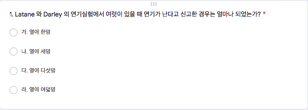
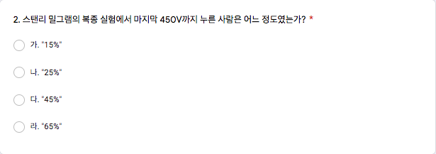
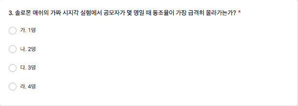
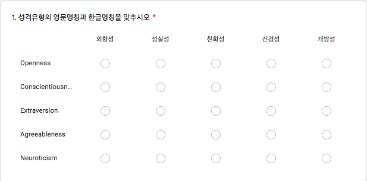
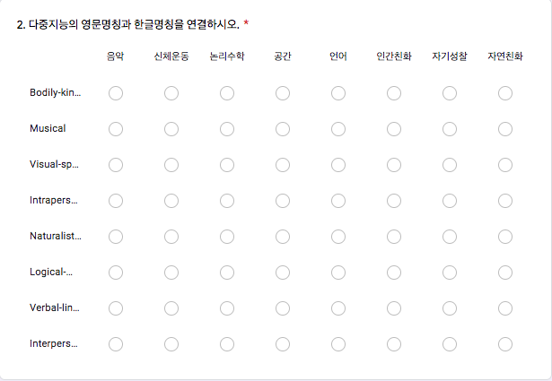
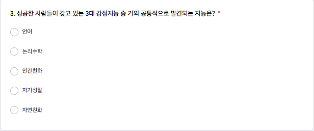
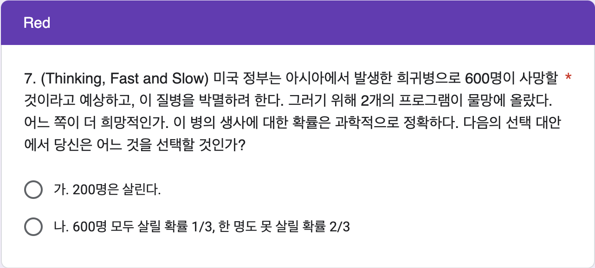
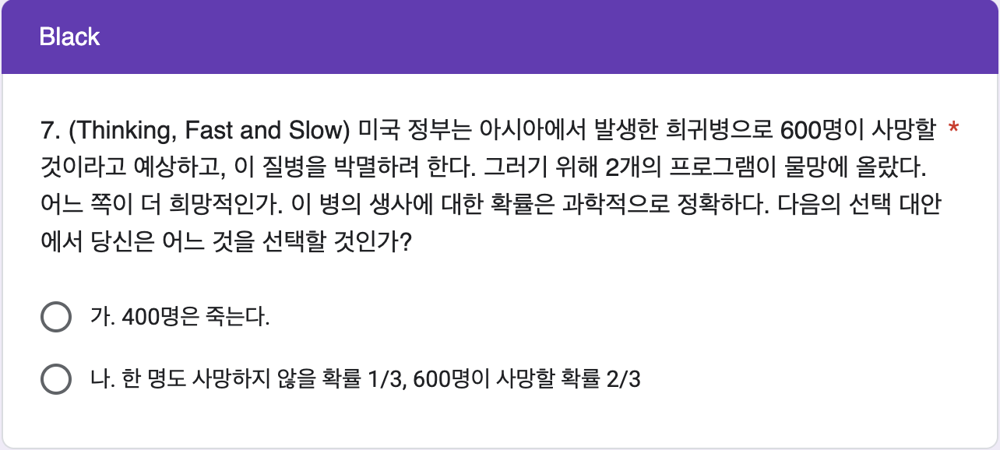

제 17 12주차 데이터 실험 집계
17.1 실험의 목적
12주차 구글 예습 설문지 집계결과를 분석합니다.
Q1~Q6에서는 랜덤화의 효과로 Red, Black 이 얼마나 닮았는지 알아봅니다.
Q7에서는 Framing Effects 를 알아 보기 위하여 동일한 내용을 Red에서는 생존을 프레임으로 프로그램을 비교하고, Black에서는 사망을 프레임으로 프로그램을 비교할 때 생존 프레임에서는 확실한 생존 인원을 선호하고, 사망 프레임에서는 운에 기대어 모두 사망하지 않는 프로그램을 선호한다는 것을 보여 줍니다.
그리고, 제출시간의 분포가 날마다 고른지, Red, Black 간에는 닮았는지 알아봅니다.
17.2 Q1. Latane and Darley

17.2.1 방관자 효과
| 열에 한명 | 열에 세명 | 열에 다섯명 | 열에 여덟명 | 계 | |
|---|---|---|---|---|---|
| Red | 218 | 86 | 33 | 9 | 346 |
| Black | 207 | 83 | 52 | 11 | 353 |
| 계 | 425 | 169 | 85 | 20 | 699 |
| Test statistic | df | P value |
|---|---|---|
| 4.715 | 3 | 0.1939 |
Q1의 집계 결과가 Red, Black 간에 통계적으로 유의한 차이가 있는지 알아보기 위하여 카이제곱 테스트를 수행하였습니다.
그 결과 카이제곱 통계량은 4.715, 자유도는 3 , p-value 는 0.1939이므로 Red, Black 간에 통계적으로 유의한 차이를 보이지 않습니다.
실제로 닮은 게 느껴집니까?
17.3 Q2. Stanley Milgram

17.3.1 450V까지 누르는 사람
| 15% | 25% | 45% | 65% | 계 | |
|---|---|---|---|---|---|
| Red | 17 | 48 | 262 | 19 | 346 |
| Black | 19 | 56 | 259 | 19 | 353 |
| 계 | 36 | 104 | 521 | 38 | 699 |
| Test statistic | df | P value |
|---|---|---|
| 0.6737 | 3 | 0.8794 |
Q2의 집계 결과가 Red, Black 간에 통계적으로 유의한 차이가 있는지 알아보기 위하여 카이제곱 테스트를 수행하였습니다.
그 결과 카이제곱 통계량은 0.674, 자유도는 3, p-value 는 0.8794이므로 Red, Black 간에 통계적으로 유의한 차이를 보이지 않습니다.
실제로 닮은 게 느껴집니까?
17.4 Q3. Solomon Asch

17.4.1 Power of 3
| 1명 | 2명 | 3명 | 4명 | 계 | |
|---|---|---|---|---|---|
| Red | 18 | 64 | 47 | 217 | 346 |
| Black | 23 | 47 | 69 | 214 | 353 |
| 계 | 41 | 111 | 116 | 431 | 699 |
| Test statistic | df | P value |
|---|---|---|
| 7.337 | 3 | 0.06189 |
Q3의 집계 결과가 Red, Black 간에 통계적으로 유의한 차이가 있는지 알아보기 위하여 카이제곱 테스트를 수행하였습니다.
그 결과 카이제곱 통계량은 7.337, 자유도는 3, p-value 는 0.0619이므로 Red, Black 간에 통계적으로 유의한 차이를 보이지 않습니다.
실제로 닮은 게 느껴집니까?
17.5 Q4. BFI 줄 긋기

17.5.1 몇 개나 맞추나?
| 0 | 1 | 2 | 3 | 5 | 계 | |
|---|---|---|---|---|---|---|
| Red | 16 | 34 | 16 | 29 | 251 | 346 |
| Black | 21 | 34 | 27 | 36 | 235 | 353 |
| 계 | 37 | 68 | 43 | 65 | 486 | 699 |
| Test statistic | df | P value |
|---|---|---|
| 4.701 | 4 | 0.3194 |
Q4의 집계 결과가 Red, Black 간에 통계적으로 유의한 차이가 있는지 알아보기 위하여 카이제곱 테스트를 수행하였습니다.
그 결과 카이제곱 통계량은 4.701, 자유도는 4, p-value 는 0.3194이므로 Red, Black 간에 통계적으로 유의한 차이를 보이지 않습니다.
실제로 닮은 게 느껴집니까?
17.6 Q5. 다중지능 짝 짓기

17.6.1 몇 개나 맞추나?
| 0 | 1 | 2 | 3 | 4 | 5 | 6 | 8 | 계 | |
|---|---|---|---|---|---|---|---|---|---|
| Red | 18 | 12 | 10 | 4 | 10 | 15 | 52 | 225 | 346 |
| Black | 26 | 15 | 8 | 6 | 7 | 12 | 67 | 212 | 353 |
| 계 | 44 | 27 | 18 | 10 | 17 | 27 | 119 | 437 | 699 |
| Test statistic | df | P value |
|---|---|---|
| 5.481 | 7 | 0.6015 |
Q5의 집계 결과가 Red, Black 간에 통계적으로 유의한 차이가 있는지 알아보기 위하여 카이제곱 테스트를 수행하였습니다.
그 결과 카이제곱 통계량은 5.481, 자유도는 7, p-value 는 0.6015이므로 Red, Black 간에 통계적으로 유의한 차이를 보이지 않습니다.
실제로 닮은 게 느껴집니까?
17.7 Q6. 성공한 사람들의 공통점

17.7.1 자기성찰지능의 중요성
| 언어 | 논리수학 | 인간친화 | 자기성찰 | 자연친화 | 계 | |
|---|---|---|---|---|---|---|
| Red | 24 | 16 | 49 | 257 | 0 | 346 |
| Black | 35 | 15 | 68 | 231 | 4 | 353 |
| 계 | 59 | 31 | 117 | 488 | 4 | 699 |
| Test statistic | df | P value |
|---|---|---|
| 6.541 | 3 | 0.08806 |
Q6의 집계 결과가 Red, Black 간에 통계적으로 유의한 차이가 있는지 알아보기 위하여 카이제곱 테스트를 수행하였습니다.
그 결과 카이제곱 통계량은 6.541, 자유도는 3, p-value 는 0.0881이므로 Red, Black 간에 통계적으로 유의한 차이를 (보이고 있습니다.) 보이지 않습니다.
실제로 닮은 게 느껴집니까?
17.8 Q7. Framing Effect : 삶과 죽음
이 질문은 프레임을 어떻게 설정하느냐에 따라 반응이 확연하게 달라진다는 Framing effects를 보여 줍니다.
600명 중 200명이 사는 거나 400명이 죽는 것, 모두 살리는 거나 모두 죽지 않는 것이나 같은 내용임에도 반응이 다르게 나타납니다.
생존 프레임에서는 확실한 생존자 수효를 보장하는 프로그램을 선호하고, 사망 프레임에서는 모두 사망하지 않기를 운에 기대는 프로그램을 선호하는 반응이 많다는 것을 확인합니다.


17.8.1 집계
| 확실히 | 확률적으로 | 계 | |
|---|---|---|---|
| 생존 프레임 | 208 | 138 | 346 |
| 사망 프레임 | 119 | 234 | 353 |
| 계 | 327 | 372 | 699 |
| Test statistic | df | P value |
|---|---|---|
| 47.88 | 1 | 4.537e-12 * * * |
Q7의 Red는 생존 프레임으로 600명 중 200명을 확실히 살리는 프로그램하고 600명 모두 살릴 확률은 1/3이고 모두 사망 확률은 2/3로 사실상 살릴 수 있는 기대인원은 200명으로 같지만 확실히 살린다는 프로그램을 더 선호하고, Black은 사망 프레임으로 Red 와 동일한 프로그램임에도 설명하기를 600명 중 400명이 확실히 죽는 프로그램하고 모두 사망하지 않을 확률은 1/3이고, 모두 사망할 확률은 2/3인 프로그램 중에서 선택하라고 했을 때 사망 프레임이 씌워져 있는 프로그램 중에서는 그나마 운에 기댈 수 있는 프로그램을 더 선호한다는 것을 명확히 보여 줍니다.
모두 살린다는 것이나 모두 사망하지 않는다는 것은 같은 말입니다.
그 결과 Red, Black 의 차이를 분석하기 위한 카이제곱 통계량은 47.877, 자유도는 1, p-value 는 4.5e-12 으로 프레임의 차이가 통계적으로 유의함을 보여 줍니다.
즉, Framing Effects가 확실히 영향을 주고 있는 것으로 파악됩니다.
17.8.2 % 비교.
| 확실히 | 확률적으로 | 계 | |
|---|---|---|---|
| 생존 프레임 | 60.1 | 39.9 | 100.0 |
| 사망 프레임 | 33.7 | 66.3 | 100.0 |
이를 백분율로 살펴보면 생존 프레임인 Red에서 확실히 200명을 살리는 프로그램을 선호하는 백분율, 60.1(%)(은)는 운에 기대어 모두 살리는 프로그램을 선호하는 백분율, 39.9(%) 보다 높고, 사망 프레임인 Black에서 확실히 400명이 사망한다는 프로그램을 선호하는 백분율, 33.7(%)(은)는 운에 기대어 모두 사망하지 않을 프로그램을 선호하는 백분율, 66.3(%)보다 낮다는 것을 알 수 있습니다.
17.9 마감 시간으로부터 제출 시간의 분포
17.9.1 분포표
| [0,1] | (1,2] | (2,3] | (3,4] | (4,5] | (5,6] | (6,7] | (7,8] | (8,9] | (9,10] | (10,11] | (11,12] | (12,13] | (13,14] | 계 | |
|---|---|---|---|---|---|---|---|---|---|---|---|---|---|---|---|
| Red | 106 | 30 | 11 | 10 | 15 | 6 | 4 | 41 | 24 | 15 | 17 | 22 | 13 | 32 | 346 |
| Black | 134 | 27 | 7 | 13 | 7 | 5 | 11 | 37 | 20 | 17 | 15 | 14 | 19 | 27 | 353 |
| 계 | 240 | 57 | 18 | 23 | 22 | 11 | 15 | 78 | 44 | 32 | 32 | 36 | 32 | 59 | 699 |
분포표로부터 두 가지 문제를 살펴보겠습니다.
첫째, 날마다 고르게 제출하는가?
둘째, Red, Black 간에 통계적으로 유의한 차이가 있는가?
각 문제를 살펴보기 위해서는 분포표의 일부분을 대상으로 카이제곱 테스트를 수행합니다.
17.9.2 날마다 고르게 제출하는가?
| [0,1] | (1,2] | (2,3] | (3,4] | (4,5] | (5,6] | (6,7] | (7,8] | (8,9] | (9,10] | (10,11] | (11,12] | (12,13] | (13,14] |
|---|---|---|---|---|---|---|---|---|---|---|---|---|---|
| 240 | 57 | 18 | 23 | 22 | 11 | 15 | 78 | 44 | 32 | 32 | 36 | 32 | 59 |
| Test statistic | df | P value |
|---|---|---|
| 871.3 | 13 | 7.397e-178 * * * |
날마다 고르게 제출하는지 알아 보았습니다.
분포표의 “계”행에서 ’계’열을 제외하고 카이제곱테스트를 수행합니다.
분포표 만으로도 쉽게 파악할 수 있지만 카이제곱테스트가 명확히 해 줍니다. 카이제곱 통계량은 871.263, 자유도는 13.00, p-value 는 7.4e-178 이므로 날짜 별로 고르게 제출하지 않았다는 점을 강력히 시사합니다.
막대그래프로 살펴 보겠습니다.
17.9.4 Red, Black 간에 닮았는가?
| [0,1] | (1,2] | (2,3] | (3,4] | (4,5] | (5,6] | (6,7] | (7,8] | (8,9] | (9,10] | (10,11] | (11,12] | (12,13] | (13,14] | |
|---|---|---|---|---|---|---|---|---|---|---|---|---|---|---|
| Red | 106 | 30 | 11 | 10 | 15 | 6 | 4 | 41 | 24 | 15 | 17 | 22 | 13 | 32 |
| Black | 134 | 27 | 7 | 13 | 7 | 5 | 11 | 37 | 20 | 17 | 15 | 14 | 19 | 27 |
| Test statistic | df | P value |
|---|---|---|
| 15.05 | 13 | 0.3044 |
제출시간의 분포가 Red, Black 간에 닮았는지 알아 보았습니다.
이번에는 분포표의 첫번째와 두번째 행, ’계’열을 제외한 나머지 열에 대해서 카이제곱테스트를 수행합니다. 카이제곱 통계량은 15.05, 자유도는 13, p-value 는 0.3044 이므로 제출 시간의 분포는 Red, Black 간에 통계적으로 유의한 차이가 관찰되지 않습니다.
이 사실을 Mosaic Plot 을 이용하여 시각적으로 살펴보겠습니다.
닮았다고 느껴지나요?